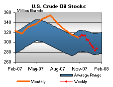

Released on January 16, 2008
(Next Release on January 24, 2008)
Comparing the Present to the Past
Tom Brady and Brett Favre, each just one game away from making it to the Super Bowl, are both sure to be inducted into the Pro Football Hall of Fame when their careers are over. Many might argue that one or the other is the greatest quarterback ever, but comparing either of them to the stars of the past requires looking at the context of the game in different time periods and making adjustments so that the comparisons are as meaningful as possible. So, too, must adjustments be made when comparing the nominal record oil prices seen in recent months to other historically high oil prices.
In recent months, the nominal price for crude oil has reached its highest level ever. As a consequence, nominal gasoline prices have reached historic highs in recent years and are expected to set new record highs this coming year. Rising and increasingly volatile crude oil and motor gasoline prices have led to increased public attention, leading many to wonder if in real terms (adjusting for inflation), crude oil and gasoline prices are as high or higher as they were in the early 1980s. In the October 24, 2007 edition of This Week in Petroleum, EIA discussed the various inflation adjustment factors that might be used in such an analysis and their relative advantages and disadvantages. This edition provides more detail and places today’s prices in terms of household expenditures.
Economy-wide inflation is usually measured by using the percent change of an overall price index. Examples of such price indices are the chain-weighted GDP deflator, an indicator of domestic price inflation; the chain-weighted Personal Consumption Expenditure deflator, a measure of inflation in overall goods consumed; and the Consumer Price Index, based on a representative market basket of goods and services consumed by urban residents. While the use of any price index to measure inflation has its advantages and limitations, the chart below shows that the choice of a particular price index does not change the conclusions that: 1) since 2005, motor gasoline prices have shown increased monthly volatility, and 2) as of October 2007, monthly real prices of motor gasoline are slightly below the peak April 1981 levels. However, for many consumers, and the economy, the more relevant question may be how energy prices are affecting household budgets, and how today’s energy expenditures compare to those of the past. Energy prices alone provide only a partial answer to this question.
While consumer energy expenditures have been growing rapidly in recent years, disposable income has grown significantly over the past quarter-century. During the third quarter of 2007 consumers spent an estimated 5.7 percent of their disposable income on energy, 2.5 percentage points less than the 8.2 percent share of disposable income devoted to energy expenditures in the second quarter of 1981, when energy consumption spending as a share of disposable income reached its peak level over the last 50 years, as shown in the chart below.
Consumer oil expenditures as a share of disposable income, also illustrated in the chart above, have shown a similar pattern. In addition to being influenced by changes in oil prices and disposable income, the changing share of consumer oil expenditures also reflects other forces, including a decline in the share of oil-heated homes, changes in the fuel efficiency of home heating equipment and the vehicle fleet, which experienced particularly large improvements from the late 1970s through the late 1980s, in addition to changes in the number of miles vehicles are traveling.
The mix of fuels in consumer energy expenditures has also changed over the past 25 years. The chart below shows that the total share of oil products in consumer energy expenditures fell rather sharply after 1981, but has grown in recent years and was close to its 1981 level in 2007. Motor gasoline’s importance has grown and fuel oil’s share has declined. In 1981, motor gasoline and fuel oil accounted for 64 percent of total energy consumption similar to the third quarter 2007’s share at 62 percent; however fuel oil’s share dropped 5 percentage points between 1981 and 2007, from 9 percent to 4 percent of total consumer energy expenditures.
Of course, just because energy expenditures relative to disposable income for the average consumer is less than the historic peak does not mean that all households have been impacted equally with the recent increase in energy prices. Energy price impacts vary according to income and energy consumption patterns. Information from various Consumer Expenditure Surveys (CES) would provide more insight on household impacts and their distribution; however, the recent increase in prices would not be reflected in the latest available consumer survey (CES of 2005). The Federal Reserve Bank of Chicago in June 2006 analyzed household energy expenditures from 1982-2005 and found that although energy’s share of total household expenditures has risen, as of 2005, it remained below the early 1980s. Their paper also estimates the average annual expenditure by income class of natural gas, electricity, gasoline and motor oil and fuel oil, showing that lower income households’ energy consumption accounted for a higher percentage of their overall expenditures. The bottom income quartile spent 9.2 percent of their expenditures on energy compared to 6.7 percent for the top income quartile between 1982 and 2004. The working poor may be more impacted by rising petroleum prices, spending 4.6 percent on oil products while the overall urban population only spent 4.1 percent. Given this finding, lower income households would tend to be impacted more by rising energy prices. Thus, deciding whether recent oil prices and costs, or those we may see soon, are the highest ever, may depend not only on which index is used, or how much the average household spends on energy, but also the income level of the particular household making the determination.
Just as people may disagree on which quarterback is really the best of all time, people may also reasonably disagree on how recent oil and energy prices compare to past experience.
Residential Heating Oil Prices Exhibit Rare Decrease
Residential heating oil prices reversed their course for the period ending January 14, 2008. The average residential heating oil price decreased by 3.4 cents last week to reach 336.1 cents per gallon, which was an increase of 97.3 cents from this time last year. Wholesale heating oil prices decreased by 13.6 cents, reaching 262.1 cents per gallon, which was an increase of 101.8 cents compared to the same period last year.
The average residential propane price rose for the fourteenth week in a row, by a mere 0.1 cent, which set the nominal high at 256.4 cents per gallon. This was an increase of 57.1 cents compared to the 199.3 cents per gallon average for this same time last year. Wholesale propane prices decreased by 10.8 cents per gallon, from 165.1 to 154.3 cents per gallon. This was a gain of 61.3 cents from the January 8, 2007 price of 93.0 cents per gallon.
Retail Gasoline and Diesel Prices Retreat
The U.S. average retail price for regular gasoline retreated from the highest recorded January price, dropping 4.1 cents to 306.8 cents per gallon as of January 14, 2008, 83.9 cents above a year ago. Prices were lower throughout the country with the Midwest showing the largest regional decrease of 9.1 cents to 301.0 cents per gallon, 93.3 cents per gallon more than last year. The East Coast fell 1.6 cents to 310.8 cents per gallon. The Gulf Coast decreased 2 cents to 295.7 cents per gallon. The Rocky Mountains declined 0.1 cent to settle at 294.9 cents per gallon, the lowest regional price. The West Coast continued as the highest regional price, shrinking 3.3 cents to 321.4 cents per gallon. The average price for regular grade in California diminished to 329.0 cents per gallon, 3.8 cents less than last week.
The retail diesel fuel price decreased a nickel to 332.6 cents per gallon, 86.3 cents higher than last year. All regional prices were lower with the East Coast down by 4.5 cents to 339.1 cents per gallon. The Midwest fell 5.7 cents to 328.8 cents per gallon. The Gulf Coast price declined 5.2 cents to 326.6 cents per gallon. The Rocky Mountain price was reduced by 1.5 cents to 326.1 cents per gallon and is the lowest regional price. The West Coast lost 5.4 cents to settle at 342.0 cents per gallon. California prices tumbled 6.7 cents to 345.9 cents per gallon.
Propane Inventories Seasonally Lower
Propane stockholders withdraw a seasonal 2.6 million barrels last week, lowering primary supplies of propane to an estimated 48.7 million barrels as of January 11, 2008. With last week’s seasonal drop, total propane inventories continued well within the average range for this time of year. Inventories continued lower in all areas last week, with the Midwest and Gulf Coast regions reporting similar declines of 1.1 million barrels. During this same time, the East Coast posted a relatively modest 0.1 million-barrel decline, while the combined Rocky Mountain/West Coast region reported a 0.4 million barrel draw. Propylene non-fuel use inventories rose by 0.2 million barrels and accounted for a larger 5.0 percent of total propane/propylene inventories, compared with 4.4 percent from the prior week.
Text from the previous editions of “This Week In Petroleum” is now accessible through a link at the top right-hand corner of this page.
| Retail Prices (Cents Per Gallon) | |||||||
| Retail Data | Changes From | Retail Data | Changes From | ||||
| 01/14/08 | Week | Year | 01/14/08 | Week | Year | ||
| Gasoline | 306.8 | Heating Oil | 336.1 | ||||
| Diesel Fuel | 332.6 | Propane | 256.4 | ||||
| Spot Prices (Cents Per Gallon) | |||||||||||||||||||||||||||||||||||||||
|
|||||||||||||||||||||||||||||||||||||||
| Stocks (Million Barrels) | |||||||
|  | |||||||
| Stocks Data | Changes From | Stocks Data | Changes From | ||||
| 01/11/08 | Week | Year | 01/11/08 | Week | Year | ||
| Crude Oil | 287.1 | Distillate | 129.8 | ||||
| Gasoline | 215.3 | Propane | 48.668 | ||||